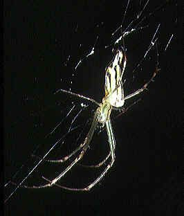

डेकोरेटिव सिल्वर ऑर्ब मकड़ीDecorative Silver Orb Spider
Leucauge decorata · Tetragnathidae · SPD-0031

- Scientific name वैज्ञानिक नाम
- Leucauge decorata (Blackwall, 1864)
- Family कुल
- Tetragnathidae
- Hindi हिंदी
- डेकोरेटिव सिल्वर ऑर्ब मकड़ी
- Local names स्थानीय नाम
- decorative silver orb spider, spider
- Status here यहाँ की स्थिति
- native
- Movement आवागमन
- Resident, here all year
- Known from कहाँ दर्ज
- Others have published records from the wider Awadh–Purvanchal plain, none yet from Basti–Ayodhya अवध–पूर्वांचल से दूसरों के प्रकाशित अभिलेख, बस्ती–अयोध्या से अभी नहीं
- IUCN IUCN
- not evaluated
- Review समीक्षा
- audited and independently read
When to look कब देखें
Expected mainly in March, April, May, June, July, August, September, October, November. मुख्यतः मार्च, अप्रैल, मई, जून, जुलाई, अगस्त, सितंबर, अक्टूबर, नवंबर में अपेक्षित।
Uses and possibilities उपयोग और संभावनाएँ
Drawn from the documented uses in the profile below, where each is labelled traditional, current or a research lead. All uses →
Tell it apart from इनसे अलग पहचानें
डेकोरेटिव सिल्वर ऑर्ब मकड़ी / Decorative Silver Orb Spider
Leucauge decorata (Blackwall, 1864) — Tetragnathidae
डेकोरेटिव सिल्वर ऑर्ब मकड़ी — पत्तियों के बीच एक पतली, चाँदी की जैसी चमकदार मकड़ी जो एक सुंदर क्षैतिज जाला बुनती है। इसका पेट लंबा और पीछे की ओर नुकीला होता है, और शरीर चमकीली, मेटालिक सिल्वर-हरे रंग का होता है। घास और झाड़ियों में बहुत आम, लेकिन अक्सर नज़रअंदाज़ की जाती है क्योंकि यह छोटी है।
Quick Identification त्वरित पहचान
| Feature | Description |
|---|---|
| Size | 5–7 mm body length; legspan 12–16 mm |
| Coloration | Silvery-green or metallic green; abdomen pointed posteriorly |
| Body shape | Elongated, slender |
| Web | Horizontal or slightly angled orb, 10–20 cm diameter |
| Habitat | Vegetation foliage; often near water |
| Abdomen | Notably elongated with pointed rear |
Field tip: Much smaller than Signature Spider. Silvery-green metallic sheen distinguishes it. Horizontal web orientation different from vertical orbs. Often overlooked due to small size and vegetation camouflage.
Morphology आकारिकी
| Feature | Measurement |
|---|---|
| Body length | 5–7 mm |
| Legspan | 12–16 mm |
| Web diameter | 10–20 cm |
Cephalothorax: Silvery-green or pale green with fine hairs.
Abdomen: Notably elongated, pointed posteriorly (posterior end tapering to a point). Metallic green or silvery with darker markings. This elongated shape is a genus characteristic.
Legs: Long, slender, pale green or silvery.
Eyes: Typical Tetragnathidae arrangement — large forward-facing eyes.
Ecological Role पारिस्थितिक भूमिका
Orb-weaver — insect predator: Constructs a horizontal or angled orb web to capture small flying insects. Preys on small flies, gnats, small moths, ants, parasitoid wasps.
Prey capture: Web is sticky; prey is wrapped in silk and consumed.
Microhabitat specialist: Often builds webs in vegetation near water — wetlands, reed beds, pond margins, ditches.
Population control: Cumulative predation across many individuals can be significant in suitable habitat.
Life Cycle / Phenology जीवन चक्र
| Month | Event |
|---|---|
| Apr–May | Spiderling emergence |
| Jun–Aug | Rapid growth; web building increases |
| Aug–Oct | Peak abundance; mating |
| Oct–Nov | Egg sac laying (brown, elongated, 6–10 mm) |
| Nov–Mar | Overwintering as eggs; adults die |
Single annual generation; more abundant in warm, wet years.
Agricultural / Human Relevance कृषि प्रासंगिकता
Pest control in wetland agriculture: Beneficial in rice paddies and irrigated vegetable plots. Preys on small flying pests.
No human impact: Harmless; does not bite or damage plants.
Expected Locally स्थानीय रूप से अपेक्षित
Not a field record. Written from published accounts for eastern Uttar Pradesh. No confirmed local sighting yet — if you have seen it, that is what the atlas needs.
अभी तक स्थानीय पुष्टि नहीं। यह विवरण प्रकाशित स्रोतों से है, किसी अवलोकन से नहीं।
Leucauge decorata is expected in vegetation foliage, reed beds, and near water sources June through November. More abundant in wet habitat and during monsoon. Webs are horizontal or angled rather than vertical, often in tall grass or low shrubs near water channels and ditches.
Distribution वितरण
Global range: Tropical and subtropical regions worldwide — Asia, Africa, Americas.
In India: Widespread in suitable wetland and vegetation habitats.
In Uttar Pradesh: Recorded in wetland areas statewide.
In Basti district / eastern UP: Expected near water sources, reed beds, and irrigated agriculture June-November.
Research Questions शोध प्रश्न
- How does web orientation (horizontal vs. angled) relate to microhabitat and wind?
- क्या यह मकड़ी धान के खेतों में कीटों को नियंत्रित करने में मदद करती है? (Does this spider help control pests in rice paddies?)
- Prey size spectrum compared with other small orb-weavers?
- Is the elongated, pointed abdomen a thermoregulatory adaptation?
- Overwintering microhabitat preferences?
Similar Species मिलती-जुलती प्रजातियाँ
| Species | Difference | |
|---|---|---|
| Leucauge argyra | Similar; slightly different colouration; very similar morphology | |
| [[signature_spider | Signature Spider (Argiope anasuja)]] | Much larger (14–20 mm); bold yellow-black pattern; vertical web |
Field rule: Tiny silvery-green spider with elongated, pointed abdomen, on horizontal web in vegetation near water, = Leucauge decorata.
Taxonomy & Classification वर्गीकरण
Original description. Blackwall, 1864.
Subspecies. Monotypic.
Family and order placement. Order Araneae, family Tetragnathidae (long-jawed orb-weavers). Genus Leucauge is characterized by the elongated abdomen and horizontal web orientation.
IUCN status rationale. Not assessed; common and stable in suitable wetland habitat.
Photo Gallery फोटो गैलरी
No photos yet — add field photos to media/species/decorative_silver_orb_spider/ and run node scripts/sync_photos.js.
References संदर्भ
- Blackwall, J. (1864). A list and brief descriptive catalogue of the spiders of Great Britain. Annals and Magazine of Natural History, Series 3, 14.
- Tikader, B.K. & Biswas, B. (1981). Spider fauna of India. Zoological Survey of India.
- Nentwig, W., et al. (2024). Spiders of Europe. www.wsc.nmbe.ch.
- World Spider Catalog. (2024). Retrieved from: http://www.wsc.nmbe.ch
- GBIF Occurrence Data — Leucauge decorata, tropical and subtropical regions (2000–2024). GBIF taxon key: [to be filled by script].
- Foelix, R.F. (2011). Biology of Spiders (3rd ed.). Oxford University Press.
Source file: species/fauna/spiders/decorative_silver_orb_spider.md